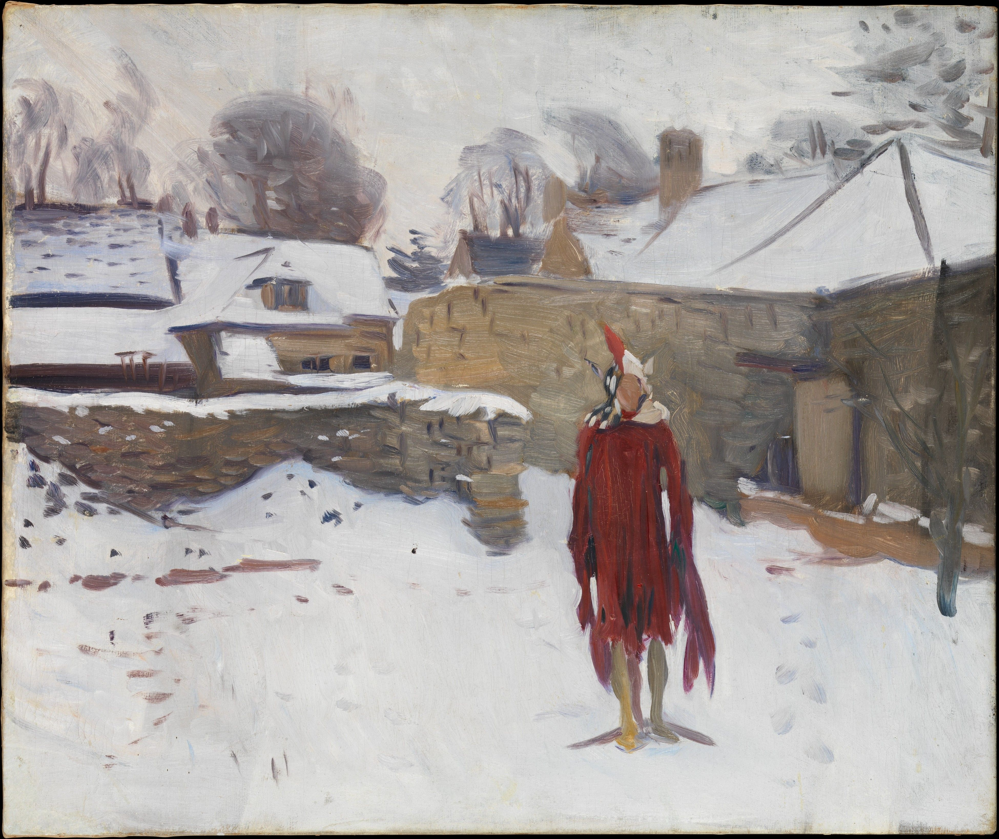

+ date = '2021-01-22T09:31:34+08:00' description = '记录 Mannikin in
the Snow' keywords = ['艺术'] tags = ['艺术'] title = 'Mannikin in the
Snow' +

Figure 1: mannikin-in-the-snow.png
Sargent painted this canvas in the company of his fellow expatriate Edwin Austin Abbey in Fairford, Gloucestershire, where the two artists had rented a studio for their work on mural commissions. As a diversion one day, they arranged a mannequin in the snow and painted oil sketches of it from their studio window. The results reveal their dissimilar approaches to art. The critic Royal Cortissoz recalled that Abbey conjured from the mannequin a lifelike medieval troubadour wearing a cloak and a feathered hat (in a painting that has not been located); Sargent, instead, recorded the lifeless dummy that stood before his eyes.
John Singer Sargent was an American expatriate artist, considered the "leading portrait painter of his generation" for his evocations of Edwardian-era luxury. From the beginning, Sargent's work is characterized by remarkable technical facility, particularly in his ability to draw with a brush, which in later years inspired admiration as well as criticism for a supposed superficiality. His commissioned works were consistent with the grand manner of portraiture, while his informal studies and landscape paintings displayed a familiarity with Impressionism.